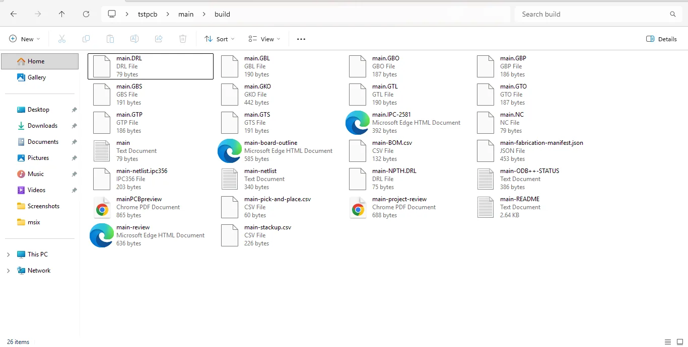

01 / Design
Build the board.
Place components with the Saad library, route connections with Setu, shape the board outline, and adjust layers and object properties.
01 / Hardware design
Unmild Designer brings PCB layout, Live 3D review, verification, and manufacturing output into a Windows desktop workspace.

The workflow
01 / Design
Place components with the Saad library, route connections with Setu, shape the board outline, and adjust layers and object properties.
02 / Review
Live 3D brings the board and its components into view. Run shows supported component states, pin activity, readings, and reported issues.
03 / Firmware
Mool brings embedded C/C++ work into the board project. Select a supported microcontroller and use a matching local compiler or toolchain to build its target image.
04 / Output
Review design checks and export manufacturing data, including Gerber artwork and drilling output, for fabrication and review.


People working on electronic hardware who want PCB design, physical review, and manufacturing output within a desktop project workflow.
A supported microcontroller in the project and the matching compiler or toolchain installed on your Windows machine. See the product documentation for details.
Designer is listed on Microsoft Store. Check that listing for current pricing, availability, and system requirements.